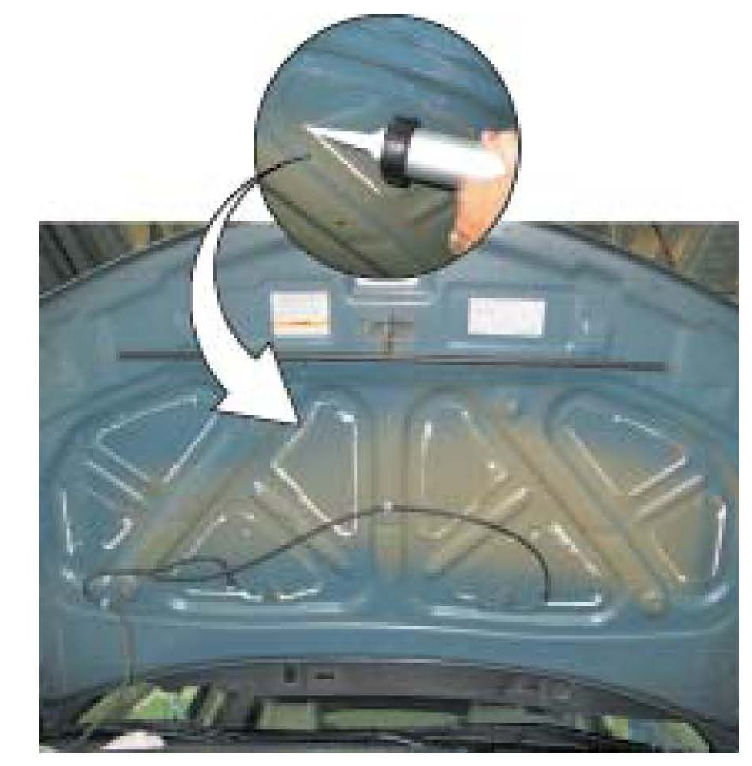

Body - Hood Flutters at Highway Speeds
07-042August 22, 2007
Applies To:
2007 MDX -
From VIN 2HNYD2...7H500001 thru 2HNYD2...7H510912
Hood Skin Flutters
SYMPTOM
The hood skin flutters when the vehicle is driven at highway speeds.
PROBABLE CAUSE
The sealant between the hood skin and the hood frame may be out of position.
CORRECTIVE ACTION
Secure the hood skin to the frame using either urethane seam sealer or autobody sealant.
PARTS INFORMATION
Hood Insulator Clip (7 required): P/N 90700-SJ4-000
REQUIRED MATERIALS
Sealer or Sealant (one cartridge repairs one vehicle):
^ 3M Ultrapro Urethane Seam Sealer
(requires 3M applicator gun 08398): P/N 3M08361
^ 3M Ultrapro Autobody Sealant
(fits a standard caulk gun): P/N 3M08300
WARRANTY CLAIM INFORMATION
In warranty:
The normal warranty applies.
Operation Number: 8120A1
Flat Rate Time: 0.5 hour
Failed Part: P/N 60100-STX-A90ZZ
Defect Code: 07404
Symptom Code: 04201
Template ID: 07-042A
Skill Level: Repair Technician
Out of warranty:
Any repair performed after warranty expiration may be eligible for goodwill consideration by the District Parts and Service Manager or your Zone Office. You must request consideration, and get a decision, before starting work.
REPAIR PROCEDURE
1. Remove the hood insulator:
^ Refer to page 20-196 in the 2007 MDX Service Manual, or
Online, enter keyword INSULATOR, and select
Hood Insulator Replacement.
2. Cover the entire engine compartment with a blanket or large fender cover.

3. Inject sealer or sealant between the frame and the skin in the eight areas shown. Be sure to follow the manufacturer's instructions.
NOTE:
Do not paint the sealer or sealant. The insulator will cover all of the repaired areas.
4. Install the insulator in the reverse order of removal:
^ Replace any stress-whitened or damaged clips.
^ Push the clips securely into place.